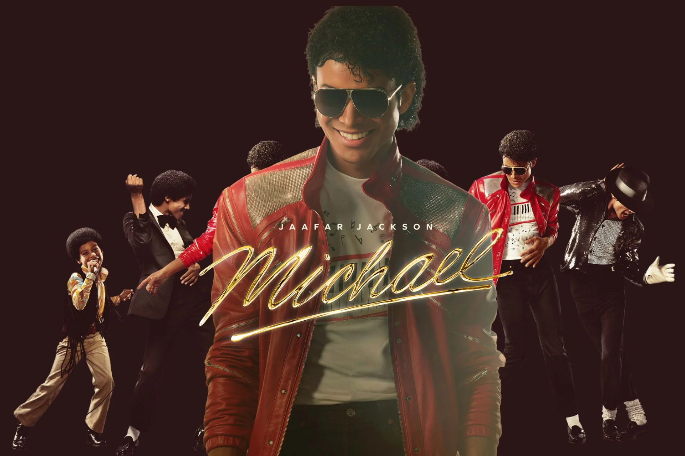
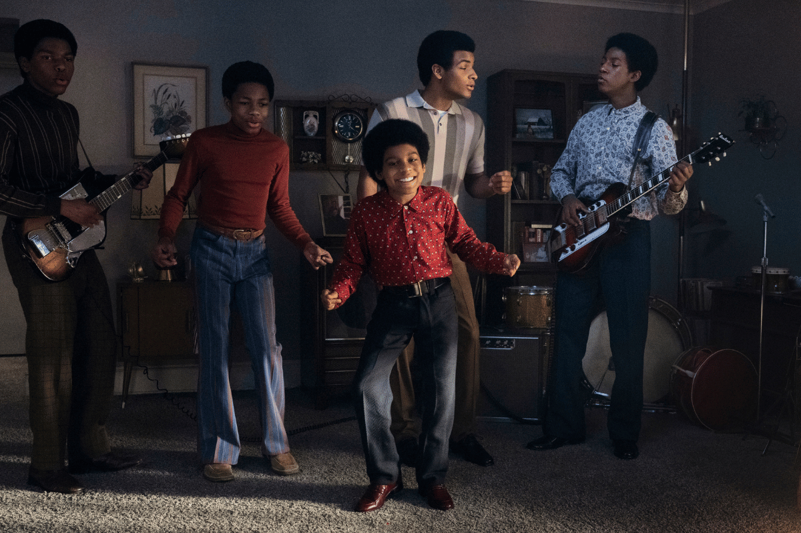

Michael Jackson — A História de um Ícone
*Michael* é uma cinebiografia que celebra a vida, a música e o legado de Michael Jackson, um dos artistas mais influentes e revolucionários de todos os tempos. O filme acompanha a trajetória de um menino que descobriu seu talento ainda na infância e que, com dedicação, criatividade e paixão pela música, se tornou mundialmente conhecido como o Rei do Pop.
A produção apresenta desde os primeiros anos de Michael ao lado dos irmãos no lendário grupo Jackson 5, mostrando o início de uma jornada marcada por talento excepcional e grandes desafios. A história acompanha sua transformação de uma jovem estrela em um artista solo que mudou para sempre a indústria do entretenimento, quebrando barreiras com sua música, seus videoclipes inovadores e suas performances inesquecíveis.
Interpretando Michael Jackson está **Jaafar Jackson**, sobrinho do próprio cantor. Filho de Jermaine Jackson, irmão de Michael, Jaafar carrega uma conexão especial com a história da família Jackson e assume o desafio de representar uma das figuras mais marcantes da cultura mundial. Sua interpretação busca trazer para as telas não apenas os movimentos e a presença de palco de Michael, mas também a dedicação, a sensibilidade e a paixão pela arte que fizeram dele uma lenda.
O filme mergulha nos momentos mais importantes da carreira de Michael Jackson, desde a ascensão meteórica com seus maiores sucessos até a criação de performances que se tornaram referências para artistas de todo o mundo. Além da fama, a produção também explora o lado humano de Michael, suas conquistas, seus sonhos e a pressão de viver sob os olhos do público.
Com músicas que atravessaram gerações, uma dança que revolucionou o cenário musical e um legado que continua inspirando milhões de pessoas, *Michael* é uma homenagem a um artista que deixou uma marca eterna na história da música.
Assistir
Olá, sou Iasmin Corrêa
Seja bem-vindo(a) ao meu espaço dedicado ao filme Michael, uma homenagem à trajetória e ao legado de um dos maiores artistas da história da música: Michael Jackson.
Criei este site como uma homenagem ao filme *Michael*, reunindo algumas informações sobre a produção, imagens e o trailer para apresentar um pouco da história do longa. Além disso, este projeto faz parte da minha jornada de aprendizado na programação, utilizando o universo do Rei do Pop como inspiração para desenvolver e aprimorar minhas habilidades na criação de páginas web.
Caso queira entrar em contato, enviar sugestões ou compartilhar sua opinião sobre o site, estarei à disposição. Este projeto faz parte da minha jornada na programação, unindo tecnologia e minha admiração pela história de Michael Jackson. WhatsApp: (21) 97347-2619
Obrigada pela visita e aproveite a experiência!